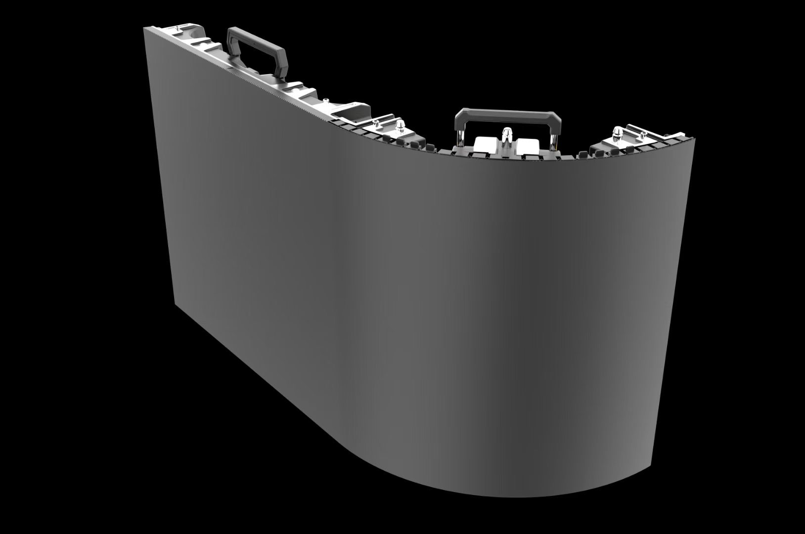

By Cassie
What does a Myanmar LED display importer need to know? Importing LED displays into Myanmar means holding a valid import licence, clearing goods through the Yangon river ports or the Thilawa special economic zone, holding conformity evidence where a standard applies, and specifying equipment that survives a hot, humid monsoon climate. This 2026 guide explains the process.
Myanmar is a frontier market of more than fifty million people with demand for LED displays from retail, banking, telecoms, hospitality, property development, and events. Domestic manufacturing of professional displays is negligible, so almost every screen is imported, with China, Thailand, and Singapore the main supply routes.
A Myanmar LED display importer who holds the licence before the goods leave and clears through Yangon or Thilawa without a document gap avoids most of the delay. The obligations that catch buyers out are the import licence and the monsoon specification.
Almost all containerised LED display cargo enters Myanmar through the Yangon river terminals, principally the Asia World and Myanmar Industrial Port facilities, or through the Thilawa special economic zone downstream, which has its own port and one-stop administration. Some border trade with China passes through Muse on the Yunnan route and with Thailand through Myawaddy.
The importer must be a registered company with a valid import licence and a taxpayer identification number, and must be registered on the customs trader register. Declarations are filed through the Myanmar Automated Cargo Clearance System, known as MACCS, and a licensed customs agent normally files on the importer's behalf.
| Step | What Is Required | Who Handles It |
|---|---|---|
| Company and tax registration | Company registration and taxpayer number | Importer |
| Import licence | Valid licence for the goods and the HS line | Importer |
| Customs registration | Registration on the trader register | Importer |
| Declaration | Entry filed through the MACCS system | Customs agent |
| Duty and commercial tax | Assessed on the customs value | Importer |
| Port and inland transport | Delivery from Yangon or Thilawa to site | Agent or importer |
Confirm the licence covers the exact commodity line before the container sails. A licence issued for one HS line does not cover another, and a shipment that arrives with a mismatch is held at the port while the licence is amended, which is measured in weeks rather than days.
Myanmar develops its national standards through the standards and research framework overseen by the Ministry of Science and Technology, with the Department of Research and Innovation and the national standards body responsible for issuing standards under the Myanmar Standard designation. The framework was historically known through the MSTRD standards programme, and Myanmar Standards are frequently aligned with IEC and ISO publications.
Conformity assessment is administered through the Department of Trade under the Ministry of Commerce, which operates the import licensing regime and the pre-shipment inspection arrangements that apply to certain goods. Confirm whether your specific product falls on a list requiring additional verification, because the position depends on the product and changes with policy.
| Requirement | What It Covers | Evidence to Hold |
|---|---|---|
| Import licence | Authorisation to import the goods | Valid licence naming the commodity line |
| Certificate of conformity | Where a standard applies to the product | Certificate naming the offered model |
| Pre-shipment inspection | Where required for the commodity | Inspection certificate for the shipment |
| Safety test report | Electrical safety | Report naming the offered model |
| EMC test report | Electromagnetic compatibility | EMC test report |
| Technical file | Drawings and specifications | Complete file held by the importer |
Because the licensing and inspection position changes more often in Myanmar than in mature markets, verify the requirement with your customs agent and the Department of Trade at the quotation stage rather than assuming last year's rules still apply.
Myanmar applies the ASEAN Harmonised Tariff Nomenclature, so the code structure is shared with the rest of the region. Duty is calculated on the customs value, and commercial tax, the local equivalent of value added tax, is charged on the duty-paid value at a rate that varies with the category of goods.
| Cost Element | Basis | Notes |
|---|---|---|
| Customs duty | AHTN commodity code and customs value | Confirm the rate for the code |
| Commercial tax | Value plus duty | Rate varies by category |
| Licence and inspection fees | Per shipment or per licence | Confirm the current requirement |
| Customs agent fee | Per declaration | Varies by agent and volume |
| Port and storage | Per day after the free period | Mounts quickly if documents are late |
| Inland transport | By distance and road condition | Confirm delivery to site |
Commercial tax is recoverable for a registered business in most cases, so the effect is on cash flow rather than on final cost. Duty, the licence fees, and the inspection charges are not recoverable and belong in the cost calculation from the beginning.
Agree the Incoterm deliberately. Under FOB the buyer arranges the freight and controls the entry, while under CIF or DDP the supplier arranges more. Under current exchange controls the choice also affects how the payment is routed, so agree it with the supplier and the bank together.
Importers work through a licensed customs agent rather than filing directly. Choose an agent who clears electronic goods rather than general cargo, and who is familiar with the Thilawa one-stop process as well as the Yangon river terminals, because the documentation route differs between them.
Give the agent the complete document pack, including the licence, before dispatch. A shipment that reaches Yangon with an incomplete file is held while the gap is filled, and storage charges accumulate for every day the container remains in the terminal.
Confirm the consignee details on the bill of lading against the importer of record, and confirm the payment routing with the bank before the goods ship. Under the current banking arrangements a payment that does not match the declared transaction can hold up the release of the cargo.
Myanmar has a tropical monsoon climate. The southwest monsoon runs from roughly May to October and brings heavy rain and very high humidity across most of the country, while the central dry zone around Mandalay is hotter and drier. Coastal sites face salt air and cyclone-season wind.
For Myanmar sites, humidity and salt-laden coastal air make sealed cabinets the deciding factor: the COB EF outdoor series (IP65, 3000 nits) and the COB ZH touring series (sealed, 3400–4000 nits) are built for exactly this duty.
| Condition | Risk | Specification Response |
|---|---|---|
| Very high humidity | Condensation inside cabinets | Sealed cabinets and ventilation design |
| Heavy monsoon rainfall | Water ingress | High ingress rating and sealed cable entries |
| Coastal salt air and cyclone wind | Corrosion and structural load | Corrosion-protected hardware and wind-load calculation |
| High ambient temperature | Thermal stress on power supplies | Higher temperature rating and a derating plan |
| Central dry-zone dust | Blocked cooling paths | Filtration and a cleaning schedule |
| Unstable grid power | Voltage fluctuation damage | Wide-input supplies and surge protection |
Where the site relies on a generator or a weak grid, specify power supplies with a wide input range and add surge protection at the panel. Voltage variation and lightning damage driver electronics faster than heat in many Southeast Asian installations.
Most LED display cargo reaches Myanmar by sea from Shenzhen or Shanghai, with transshipment through Singapore or Port Klang onto a feeder service for Yangon or Thilawa. Air freight arrives at Yangon International Airport and is reserved for urgent spare parts and sample units.
| Stage | Typical Duration | What Can Delay It |
|---|---|---|
| Production | 15 to 25 working days | Component availability and queue |
| Inland to port and export | 3 to 5 days | Booking availability |
| Sea freight and feeder | Varies by routing | Transshipment and carrier schedule |
| Import clearance | 5 to 12 days | Licence and documentation queries |
| Inland delivery | 1 to 5 days | Distance and road condition |
| Total | Approximately 7 to 10 weeks | Add a substantial buffer |
Build a buffer of at least three weeks beyond the quoted transit time. Where a licence amendment or a payment query arises at the port, the delay is measured in weeks rather than days, and a screen tied to an opening date has no room to absorb it.
Ask every candidate the same questions and record the answers. For Myanmar projects the licensing support, the humidity specification, and the packing quality matter as much as the price.
| Question | What a Strong Answer Looks Like | Warning Sign |
|---|---|---|
| Licence and conformity support | Documents prepared before dispatch | Documents promised after arrival |
| Humidity rating | Stated ingress protection and treatment | Not specified |
| Power supply | Named brand and wide input range | Brand only, no part number |
| Packaging standard | Crating method described for sea and feeder legs | Not addressed |
| Documentation language | English documents supplied as standard | Reluctant to provide |
| Spare parts availability | Stated period in writing | No commitment given |
Confirm the components in writing and require written approval for any substitution. A supplier facing a component shortage may change a part quietly, and the change only appears when the screens arrive in Yangon.
Each mistake is inexpensive to avoid during planning and costly after the goods land. A Myanmar LED display importer who confirms the licence, aligns the payment, and specifies for the monsoon avoids most of them.
Asia Vision Technology manufactures LED displays in Shenzhen and supplies importers, distributors, and contractors across Southeast Asia. The factory prepares the documentation needed for the licensing and conformity file, packs for long sea and feeder routes, and holds spare parts for the stated warranty period.
For Myanmar projects the company supplies rental cabinets for events, fine pitch screens for retail and corporate work, and outdoor displays rated for humidity, monsoon rainfall, and high ambient temperature. OEM and ODM production is available for distributors building their own range.
